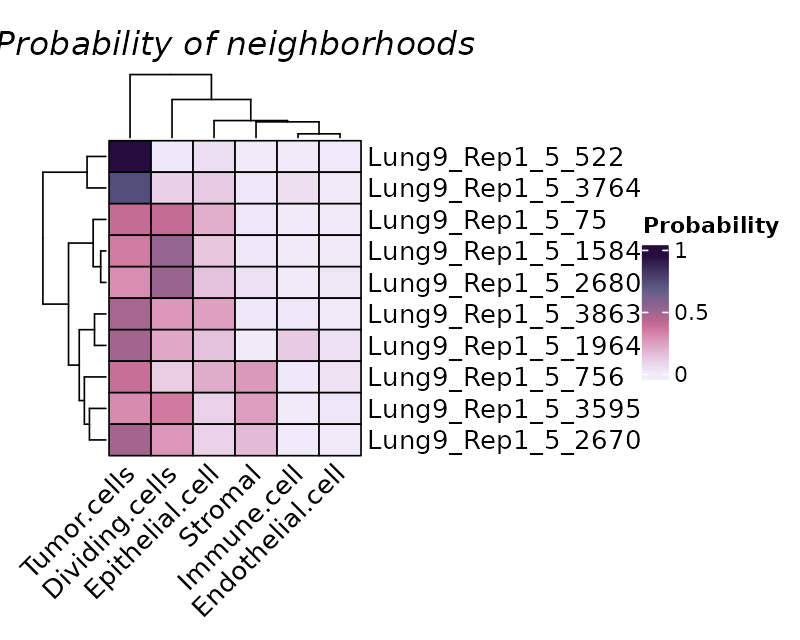
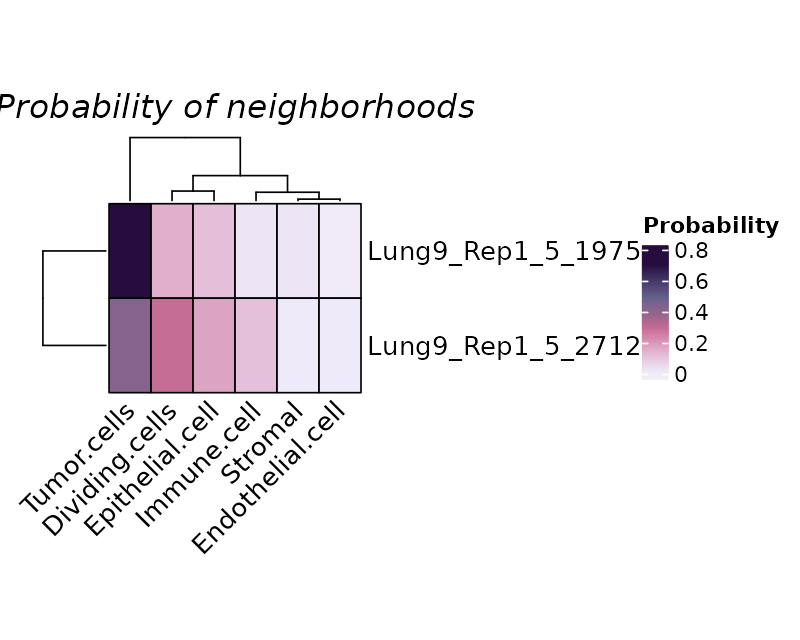
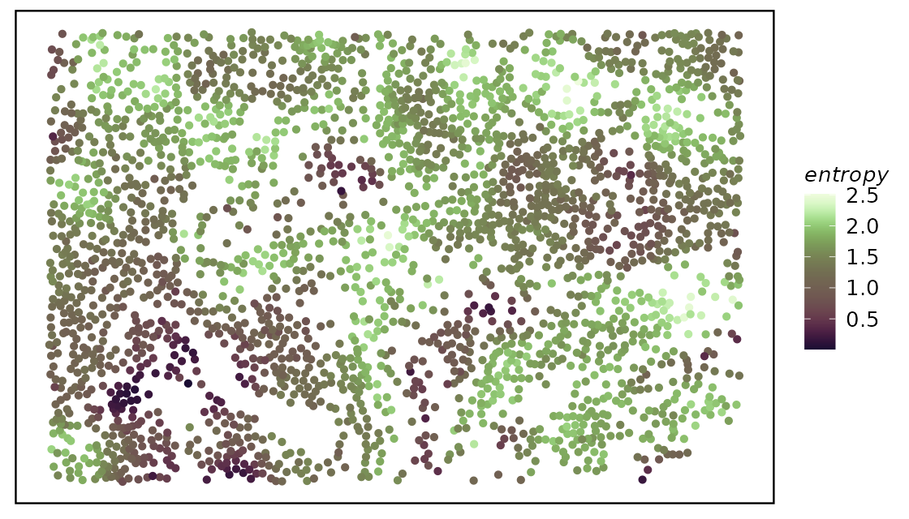
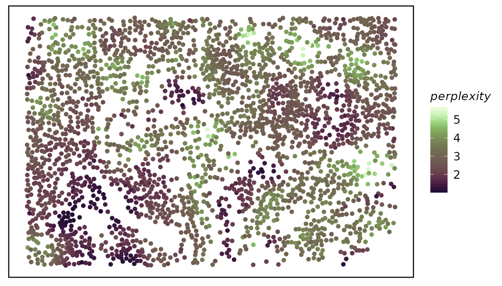
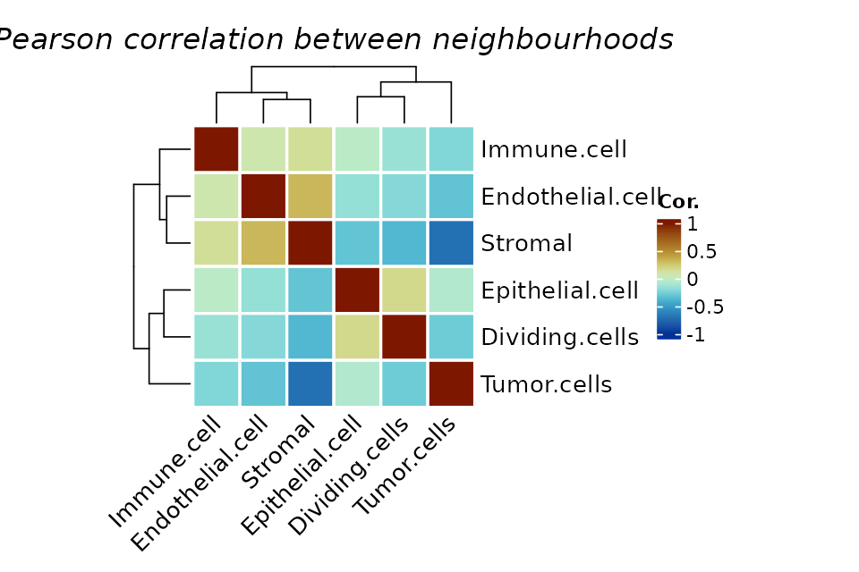
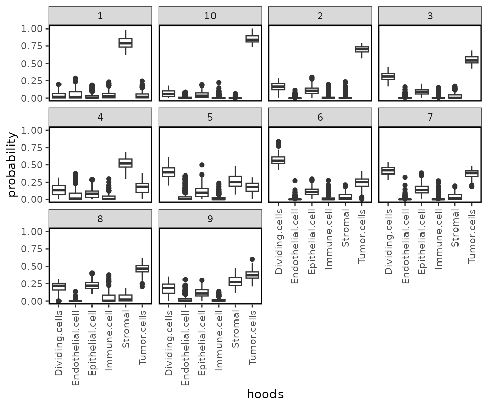
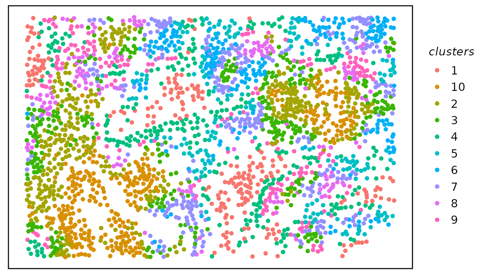

A quick start guide to the hoodscanR package
Ning Liu, Melissa Davis
2023-09-15
Source:vignettes/Quick_start.Rmd
Quick_start.RmdIntroduction
hoodscanR is an user-friendly R package providing functions to assist cellular neighborhood analysis of any spatial transcriptomics data with single-cell resolution.
All functions in the package are built based on the SpatialExperiment infrastructure, allowing integration into various spatial transcriptomics-related packages from Bioconductor. The package can result in cell-level neighborhood annotation output, along with funtions to perform neighborhood colocalization analysis and neighborhood-based cell clustering.
Installation
if (!require("BiocManager", quietly = TRUE)) {
install.packages("BiocManager")
}
BiocManager::install("hoodscanR")The development version of hoodscanR can be installed
from GitHub:
devtools::install_github("DavisLaboratory/hoodscanR")Data exploration
data("spe_test")
spe <- readHoodData(spe, anno_col = "celltypes")
spe## class: SpatialExperiment
## dim: 50 2661
## metadata(1): dummy
## assays(1): counts
## rownames(50): MERTK MRC1 ... SAA2 FZD4
## rowData names(0):
## colnames(2661): Lung9_Rep1_5_5 Lung9_Rep1_5_6 ... Lung9_Rep1_5_4047
## Lung9_Rep1_5_4052
## colData names(9): orig.ident nCount_RNA ... cell_annotation sample_id
## reducedDimNames(0):
## mainExpName: NULL
## altExpNames(0):
## spatialCoords names(2) : x y
## imgData names(0):
colData(spe)## DataFrame with 2661 rows and 9 columns
## orig.ident nCount_RNA nFeature_RNA fov Area
## <factor> <numeric> <integer> <integer> <integer>
## Lung9_Rep1_5_5 Lung9 182 104 5 4377
## Lung9_Rep1_5_6 Lung9 447 214 5 4678
## Lung9_Rep1_5_7 Lung9 234 148 5 2236
## Lung9_Rep1_5_8 Lung9 118 69 5 4781
## Lung9_Rep1_5_14 Lung9 424 235 5 4385
## ... ... ... ... ... ...
## Lung9_Rep1_5_4040 Lung9 84 65 5 1720
## Lung9_Rep1_5_4041 Lung9 153 105 5 3418
## Lung9_Rep1_5_4045 Lung9 48 42 5 1735
## Lung9_Rep1_5_4047 Lung9 50 41 5 2101
## Lung9_Rep1_5_4052 Lung9 48 42 5 977
## AspectRatio slide cell_annotation sample_id
## <numeric> <character> <character> <character>
## Lung9_Rep1_5_5 1.15 Lung9_Rep1 Tumor.cells sample01
## Lung9_Rep1_5_6 0.98 Lung9_Rep1 Tumor.cells sample01
## Lung9_Rep1_5_7 1.29 Lung9_Rep1 Tumor.cells sample01
## Lung9_Rep1_5_8 1.74 Lung9_Rep1 Stromal sample01
## Lung9_Rep1_5_14 1.11 Lung9_Rep1 Tumor.cells sample01
## ... ... ... ... ...
## Lung9_Rep1_5_4040 0.87 Lung9_Rep1 Epithelial.cell sample01
## Lung9_Rep1_5_4041 2.89 Lung9_Rep1 Dividing.cells sample01
## Lung9_Rep1_5_4045 1.45 Lung9_Rep1 Tumor.cells sample01
## Lung9_Rep1_5_4047 2.97 Lung9_Rep1 Epithelial.cell sample01
## Lung9_Rep1_5_4052 2.22 Lung9_Rep1 Epithelial.cell sample01We can have a look at the tissue and cell positions by using the
function plotTissue.
The test data is relatively sparse with low-level cell type annotations.
col.pal <- c("red3", "royalblue", "gold", "cyan2", "purple3", "darkgreen")
plotTissue(spe, color = cell_annotation, size = 1.5, alpha = 0.8) +
scale_color_manual(values = col.pal)Neighborhoods scanning
In order to perform neighborhood scanning, we need to firstly identify k (in this example, k = 100) nearest cells for each cells.
fnc <- findNearCells(spe, k = 100)The output of findNearCells function includes two
matrix, an annotation matrix and a distance matrix.
lapply(fnc, function(x) x[1:10, 1:5])## $cells
## nearest_cell_1 nearest_cell_2 nearest_cell_3 nearest_cell_4
## Lung9_Rep1_5_5 Tumor.cells Tumor.cells Tumor.cells Tumor.cells
## Lung9_Rep1_5_6 Tumor.cells Tumor.cells Tumor.cells Tumor.cells
## Lung9_Rep1_5_7 Tumor.cells Tumor.cells Tumor.cells Dividing.cells
## Lung9_Rep1_5_8 Stromal Dividing.cells Epithelial.cell Stromal
## Lung9_Rep1_5_14 Tumor.cells Tumor.cells Dividing.cells Dividing.cells
## Lung9_Rep1_5_15 Tumor.cells Tumor.cells Tumor.cells Dividing.cells
## Lung9_Rep1_5_18 Stromal Stromal Epithelial.cell Stromal
## Lung9_Rep1_5_21 Tumor.cells Tumor.cells Tumor.cells Tumor.cells
## Lung9_Rep1_5_22 Dividing.cells Tumor.cells Tumor.cells Tumor.cells
## Lung9_Rep1_5_25 Stromal Stromal Stromal Stromal
## nearest_cell_5
## Lung9_Rep1_5_5 Tumor.cells
## Lung9_Rep1_5_6 Tumor.cells
## Lung9_Rep1_5_7 Tumor.cells
## Lung9_Rep1_5_8 Dividing.cells
## Lung9_Rep1_5_14 Tumor.cells
## Lung9_Rep1_5_15 Tumor.cells
## Lung9_Rep1_5_18 Tumor.cells
## Lung9_Rep1_5_21 Dividing.cells
## Lung9_Rep1_5_22 Tumor.cells
## Lung9_Rep1_5_25 Stromal
##
## $distance
## nearest_cell_1 nearest_cell_2 nearest_cell_3 nearest_cell_4
## Lung9_Rep1_5_5 89.89994 124.91997 145.38225 157.13688
## Lung9_Rep1_5_6 43.41659 77.52419 84.97058 89.02247
## Lung9_Rep1_5_7 43.41659 48.04165 97.00000 109.98636
## Lung9_Rep1_5_8 64.40497 166.92813 202.35612 206.20621
## Lung9_Rep1_5_14 71.80529 77.31753 115.20851 125.29964
## Lung9_Rep1_5_15 56.08921 105.75916 108.66922 112.78741
## Lung9_Rep1_5_18 99.80982 181.68654 186.81542 189.44656
## Lung9_Rep1_5_21 46.09772 81.56592 86.57944 99.32271
## Lung9_Rep1_5_22 29.73214 43.01163 49.64877 67.06713
## Lung9_Rep1_5_25 87.70975 158.91193 181.03315 205.38014
## nearest_cell_5
## Lung9_Rep1_5_5 158.6852
## Lung9_Rep1_5_6 101.4347
## Lung9_Rep1_5_7 120.9339
## Lung9_Rep1_5_8 228.7204
## Lung9_Rep1_5_14 129.0349
## Lung9_Rep1_5_15 143.0035
## Lung9_Rep1_5_18 220.7374
## Lung9_Rep1_5_21 108.4066
## Lung9_Rep1_5_22 69.8570
## Lung9_Rep1_5_25 276.8267We can then perform neighborhood analysis using the function
scanHoods.
pm <- scanHoods(fnc$distance)The resulting matrix is the probability of each cell associating with their 100 nearest cells.
pm[1:10, 1:5]## nearest_cell_1 nearest_cell_2 nearest_cell_3 nearest_cell_4
## Lung9_Rep1_5_5 0.18304483 0.13150067 0.10311690 0.08819389
## Lung9_Rep1_5_6 0.11420320 0.09526285 0.09032795 0.08757140
## Lung9_Rep1_5_7 0.13475921 0.13227645 0.09680770 0.08601822
## Lung9_Rep1_5_8 0.44211502 0.15585801 0.08768955 0.08183066
## Lung9_Rep1_5_14 0.09572989 0.09233235 0.06700040 0.06022003
## Lung9_Rep1_5_15 0.17384013 0.12208690 0.11878336 0.11411524
## Lung9_Rep1_5_18 0.41139452 0.14935678 0.13744881 0.13159514
## Lung9_Rep1_5_21 0.09624026 0.07886930 0.07599996 0.06848324
## Lung9_Rep1_5_22 0.08024218 0.07690592 0.07485455 0.06845482
## Lung9_Rep1_5_25 0.44586128 0.20603613 0.14803730 0.09789334
## nearest_cell_5
## Lung9_Rep1_5_5 0.08631823
## Lung9_Rep1_5_6 0.07892756
## Lung9_Rep1_5_7 0.07697076
## Lung9_Rep1_5_8 0.05320675
## Lung9_Rep1_5_14 0.05775686
## Lung9_Rep1_5_15 0.08124211
## Lung9_Rep1_5_18 0.07485027
## Lung9_Rep1_5_21 0.06303149
## Lung9_Rep1_5_22 0.06731485
## Lung9_Rep1_5_25 0.02152751We can then merge the probabilities by the cell types of the 100 nearest cells.
hoods <- mergeByGroup(pm, fnc$cells)
hoods[1:10, ]## Dividing.cells Endothelial.cell Epithelial.cell Immune.cell
## Lung9_Rep1_5_5 0.006003838 3.564371e-04 1.063262e-05 3.133032e-02
## Lung9_Rep1_5_6 0.206692970 5.075441e-06 1.381476e-02 4.447312e-07
## Lung9_Rep1_5_7 0.263126690 9.512496e-07 2.015171e-02 6.336489e-08
## Lung9_Rep1_5_8 0.216159266 1.481687e-06 1.337012e-01 3.953512e-09
## Lung9_Rep1_5_14 0.174747009 7.946121e-03 1.972819e-03 9.591948e-06
## Lung9_Rep1_5_15 0.117429056 4.244536e-04 6.713550e-04 2.374688e-03
## Lung9_Rep1_5_18 0.024023243 4.349856e-06 1.376427e-01 1.394815e-07
## Lung9_Rep1_5_21 0.206271880 4.045150e-04 5.811456e-02 0.000000e+00
## Lung9_Rep1_5_22 0.218030798 5.962029e-03 2.615948e-02 2.456481e-07
## Lung9_Rep1_5_25 0.014854723 4.151471e-07 9.489670e-04 0.000000e+00
## Stromal Tumor.cells
## Lung9_Rep1_5_5 0.000000e+00 0.962298768
## Lung9_Rep1_5_6 0.000000e+00 0.779486754
## Lung9_Rep1_5_7 0.000000e+00 0.716720587
## Lung9_Rep1_5_8 5.802381e-01 0.069899943
## Lung9_Rep1_5_14 2.589378e-05 0.815298565
## Lung9_Rep1_5_15 0.000000e+00 0.879100448
## Lung9_Rep1_5_18 7.565452e-01 0.081784355
## Lung9_Rep1_5_21 1.453902e-01 0.589818860
## Lung9_Rep1_5_22 2.321371e-03 0.747526073
## Lung9_Rep1_5_25 9.774651e-01 0.006730819Neighborhoods analysis
We plot randomly plot 10 cells to see the output of neighborhood
scanning using plotHoodMat.
plotHoodMat(hoods, n = 10, hm_height = 5)
Or to check the cells-of-interest with the parameter
targetCells within the function
plotHoodMat(hoods, targetCells = c("Lung9_Rep1_5_1975", "Lung9_Rep1_5_2712"), hm_height = 3)
We can then merge the neighborhood results with the SpatialExperiment
object using mergeHoodSpe so that we can conduct more
neighborhood-related analysis.
spe <- mergeHoodSpe(spe, hoods)To summarise our neighborhood results, we can use
calcMetrics to calculate entropy and perplexity of the
probability matrix so that we can have a summarisatino of the
neighborhood distribution across the tissue slide, i.e. where
neighborhood is more distinct and where is more mixed.
spe <- calcMetrics(spe, pm_cols = colnames(hoods))We then again use plotTissue to plot out the entropy or
perplexity.
plotTissue(spe, size = 1.5, color = entropy) +
scale_color_scico(palette = "tokyo")
plotTissue(spe, size = 1.5, color = perplexity) +
scale_color_scico(palette = "tokyo")
We can perform neighborhood colocalization analysis using
plotColocal. Here we can see in the test data, endothelial
cells and stromal cells are more likely to colocalize, epithelial cells
and dividing cells are more likely to colocalize.
plotColocal(spe, pm_cols = colnames(hoods))
We can cluster the cells by their neighborhood probability
distribution using clustByHood, it is based on the k-means
algorithm and here we set k to 10.
spe <- clustByHood(spe, pm_cols = colnames(hoods), k = 10)We can see what are the neighborhood distributions look like in each
cluster using plotProbDist.
plotProbDist(spe, pm_cols = colnames(hoods), by_cluster = TRUE, plot_all = TRUE, show_clusters = as.character(seq(10)))
We can plot the clusters on the tissue slide, agian using
plotTissue.
plotTissue(spe, color = clusters)
Session info
## R version 4.3.1 (2023-06-16)
## Platform: x86_64-pc-linux-gnu (64-bit)
## Running under: Ubuntu 22.04.3 LTS
##
## Matrix products: default
## BLAS: /usr/lib/x86_64-linux-gnu/openblas-pthread/libblas.so.3
## LAPACK: /usr/lib/x86_64-linux-gnu/openblas-pthread/libopenblasp-r0.3.20.so; LAPACK version 3.10.0
##
## locale:
## [1] LC_CTYPE=C.UTF-8 LC_NUMERIC=C LC_TIME=C.UTF-8
## [4] LC_COLLATE=C.UTF-8 LC_MONETARY=C.UTF-8 LC_MESSAGES=C.UTF-8
## [7] LC_PAPER=C.UTF-8 LC_NAME=C LC_ADDRESS=C
## [10] LC_TELEPHONE=C LC_MEASUREMENT=C.UTF-8 LC_IDENTIFICATION=C
##
## time zone: UTC
## tzcode source: system (glibc)
##
## attached base packages:
## [1] stats4 stats graphics grDevices utils datasets methods
## [8] base
##
## other attached packages:
## [1] scico_1.5.0 SpatialExperiment_1.10.0
## [3] SingleCellExperiment_1.22.0 SummarizedExperiment_1.30.2
## [5] Biobase_2.60.0 GenomicRanges_1.52.0
## [7] GenomeInfoDb_1.36.3 IRanges_2.34.1
## [9] S4Vectors_0.38.1 BiocGenerics_0.46.0
## [11] MatrixGenerics_1.12.3 matrixStats_1.0.0
## [13] hoodscanR_0.99.1 ggplot2_3.4.3
##
## loaded via a namespace (and not attached):
## [1] bitops_1.0-7 rlang_1.1.1
## [3] magrittr_2.0.3 clue_0.3-64
## [5] GetoptLong_1.0.5 compiler_4.3.1
## [7] DelayedMatrixStats_1.22.6 png_0.1-8
## [9] systemfonts_1.0.4 vctrs_0.6.3
## [11] stringr_1.5.0 shape_1.4.6
## [13] pkgconfig_2.0.3 crayon_1.5.2
## [15] fastmap_1.1.1 magick_2.7.5
## [17] XVector_0.40.0 scuttle_1.10.2
## [19] labeling_0.4.3 utf8_1.2.3
## [21] rmarkdown_2.24 ragg_1.2.5
## [23] purrr_1.0.2 xfun_0.40
## [25] zlibbioc_1.46.0 cachem_1.0.8
## [27] beachmat_2.16.0 jsonlite_1.8.7
## [29] rhdf5filters_1.12.1 DelayedArray_0.26.7
## [31] Rhdf5lib_1.22.1 BiocParallel_1.34.2
## [33] cluster_2.1.4 parallel_4.3.1
## [35] R6_2.5.1 bslib_0.5.1
## [37] stringi_1.7.12 RColorBrewer_1.1-3
## [39] limma_3.56.2 jquerylib_0.1.4
## [41] Rcpp_1.0.11 iterators_1.0.14
## [43] knitr_1.44 R.utils_2.12.2
## [45] Matrix_1.5-4.1 tidyselect_1.2.0
## [47] abind_1.4-5 yaml_2.3.7
## [49] doParallel_1.0.17 codetools_0.2-19
## [51] lattice_0.21-8 tibble_3.2.1
## [53] withr_2.5.0 evaluate_0.21
## [55] desc_1.4.2 circlize_0.4.15
## [57] pillar_1.9.0 foreach_1.5.2
## [59] generics_0.1.3 rprojroot_2.0.3
## [61] RCurl_1.98-1.12 sparseMatrixStats_1.12.2
## [63] munsell_0.5.0 scales_1.2.1
## [65] glue_1.6.2 tools_4.3.1
## [67] locfit_1.5-9.8 RANN_2.6.1
## [69] fs_1.6.3 rhdf5_2.44.0
## [71] grid_4.3.1 DropletUtils_1.20.0
## [73] edgeR_3.42.4 colorspace_2.1-0
## [75] GenomeInfoDbData_1.2.10 HDF5Array_1.28.1
## [77] cli_3.6.1 textshaping_0.3.6
## [79] fansi_1.0.4 S4Arrays_1.0.6
## [81] ComplexHeatmap_2.16.0 dplyr_1.1.3
## [83] gtable_0.3.4 R.methodsS3_1.8.2
## [85] sass_0.4.7 digest_0.6.33
## [87] dqrng_0.3.1 rjson_0.2.21
## [89] farver_2.1.1 memoise_2.0.1
## [91] htmltools_0.5.6 pkgdown_2.0.7
## [93] R.oo_1.25.0 lifecycle_1.0.3
## [95] GlobalOptions_0.1.2